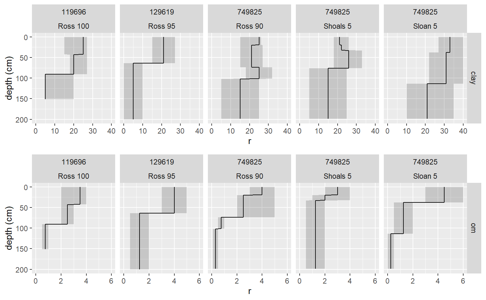
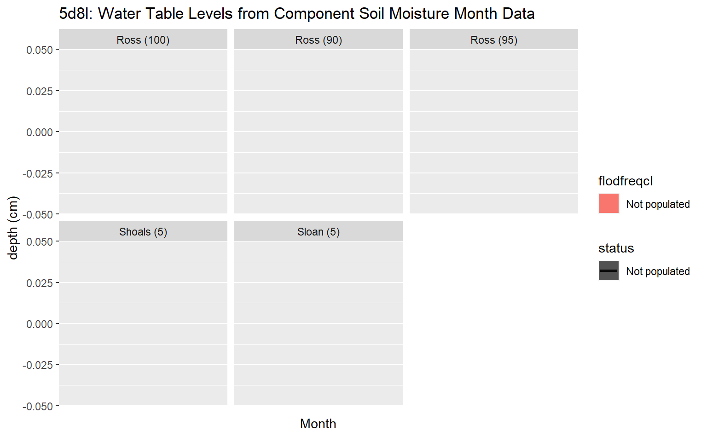

Extract component tables from a the NASIS Web Reports
fetchNASISWebReport.RdGet, format, impute, and return component tables.
fetchNASISWebReport(projectname, rmHzErrors = FALSE, fill = FALSE, stringsAsFactors = default.stringsAsFactors() ) get_progress_from_NASISWebReport(mlrassoarea, fiscalyear, projecttypename) get_project_from_NASISWebReport(mlrassoarea, fiscalyear) get_project_correlation_from_NASISWebReport(mlrassoarea, fiscalyear, projectname) get_projectmapunit_from_NASISWebReport(projectname, stringsAsFactors = default.stringsAsFactors() ) get_projectmapunit2_from_NASISWebReport(mlrassoarea, fiscalyear, projectname, stringsAsFactors = default.stringsAsFactors() ) get_legend_from_NASISWebReport(areasymbol, droplevels = TRUE, stringsAsFactors = default.stringsAsFactors() ) get_mapunit_from_NASISWebReport(areasymbol, droplevels = TRUE, stringsAsFactors = default.stringsAsFactors() ) get_component_from_NASISWebReport(projectname, stringsAsFactors = default.stringsAsFactors() ) get_chorizon_from_NASISWebReport(projectname, fill = FALSE, stringsAsFactors = default.stringsAsFactors() ) get_cosoilmoist_from_NASISWebReport(projectname, impute = TRUE, stringsAsFactors = default.stringsAsFactors() ) get_sitesoilmoist_from_NASISWebReport(usiteid)
Arguments
| projectname | text string vector of project names to be inserted into a SQL WHERE clause (default: NA) |
|---|---|
| mlrassoarea | text string value identifying the mlra soil survey office areasymbol symbol inserted into a SQL WHERE clause (default: NA) |
| fiscalyear | text string value identifying the fiscal year inserted into a SQL WHERE clause (default: NA) |
| projecttypename | text string value identifying the project type name inserted into a SQL WHERE clause (default: NA) |
| areasymbol | text string value identifying the area symbol (e.g. "IN001" or "IN%") inserted into a SQL WHERE clause (default: NA) |
| usiteid | text string value identifying the user site id inserted into a SQL WHERE clause (default: NA) |
| impute | replace missing (i.e. NULL) values with "Not_Populated" for categorical data, or the "RV" for numeric data or 201 cm if the "RV" is also NULL (default: TRUE) |
| fill | should rows with missing component ids be removed NA (FALSE) |
| rmHzErrors | should pedons with horizonation errors be removed from the results? (default: FALSE) |
| stringsAsFactors | logical: should character vectors be converted to factors? This argument is passed to the uncode() function. It does not convert those vectors that have been set outside of uncode() (i.e. hard coded). The 'factory-fresh' default is TRUE, but this can be changed by setting options(stringsAsFactors = FALSE) |
| droplevels | logical: indicating whether to drop unused levels in classifying factors. This is useful when a class has large number of unused classes, which can waste space in tables and figures. |
Value
A dataframe or list with the results.
Examples
# \donttest{ if ( require("aqp") & require("ggplot2") & require("gridExtra") ) { # query soil components by projectname test = fetchNASISWebReport( "EVAL - MLRA 111A - Ross silt loam, 0 to 2 percent slopes, frequently flooded" ) test = test$spc # profile plot plot(test) # convert the data for depth plot clay_slice = horizons(slice(test, 0:200 ~ claytotal_l + claytotal_r + claytotal_h)) names(clay_slice) <- gsub("claytotal_", "", names(clay_slice)) om_slice = horizons(slice(test, 0:200 ~ om_l + om_r + om_h)) names(om_slice) = gsub("om_", "", names(om_slice)) test2 = rbind(data.frame(clay_slice, var = "clay"), data.frame(om_slice, var = "om") ) h = merge(test2, site(test)[c("dmuiid", "coiid", "compname", "comppct_r")], by = "coiid", all.x = TRUE ) # depth plot of clay content by soil component gg_comp <- function(x) { ggplot(x) + geom_line(aes(y = r, x = hzdept_r)) + geom_line(aes(y = r, x = hzdept_r)) + geom_ribbon(aes(ymin = l, ymax = h, x = hzdept_r), alpha = 0.2) + xlim(200, 0) + xlab("depth (cm)") + facet_grid(var ~ dmuiid + paste(compname, comppct_r)) + coord_flip() } g1 <- gg_comp(subset(h, var == "clay")) g2 <- gg_comp(subset(h, var == "om")) grid.arrange(g1, g2) # query cosoilmoist (e.g. water table data) by mukey # NA depths are interpreted as (???) with impute=TRUE argument x <- get_cosoilmoist_from_NASISWebReport( "EVAL - MLRA 111A - Ross silt loam, 0 to 2 percent slopes, frequently flooded" ) ggplot(x, aes(x = as.integer(month), y = dept_r, lty = status)) + geom_rect(aes(xmin = as.integer(month), xmax = as.integer(month) + 1, ymin = 0, ymax = max(x$depb_r), fill = flodfreqcl)) + geom_line(cex = 1) + geom_point() + geom_ribbon(aes(ymin = dept_l, ymax = dept_h), alpha = 0.2) + ylim(max(x$depb_r), 0) + xlab("month") + ylab("depth (cm)") + scale_x_continuous(breaks = 1:12, labels = month.abb, name="Month") + facet_wrap(~ paste0(compname, ' (', comppct_r , ')')) + ggtitle(paste0(x$nationalmusym[1], ': Water Table Levels from Component Soil Moisture Month Data')) }#>#> Warning: package 'ggplot2' was built under R version 3.5.3#>#> Warning: package 'gridExtra' was built under R version 3.5.3#>#>#>#> Warning: Removed 49 rows containing missing values (geom_path).#> Warning: Removed 49 rows containing missing values (geom_path).#> Warning: Removed 49 rows containing missing values (geom_path).#> Warning: Removed 49 rows containing missing values (geom_path).# }